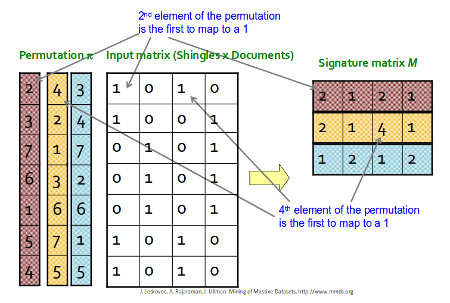
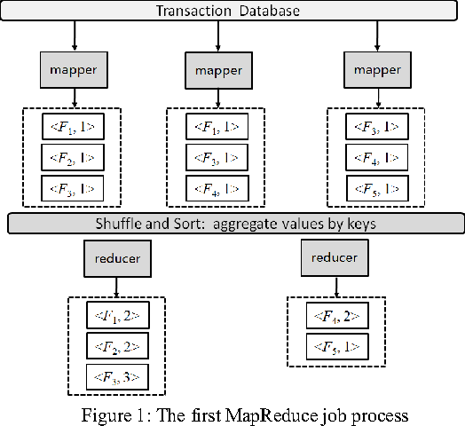

Project Summary
- Academic Project
- Solo Project
- Python
- PySpark
Handling Big Data
In this project, I was given a massive dataset; dozens of megabytes. I had to write code which would process all of this data on a very slow machine in a short time frame, and return similar item sets. This is to simulate working with a dataset which exceeds the capabilities of the hardware, much like a data center.
When dealing with large datasets, conventional software practices fall short. Simple operations can take years to complete, and a single failure can result in significant setbacks. To complete this project, I leveraged a Big Data framework to process and identify similar items.
Introduction to a Robust Framework
The Big Data framework I employed is Apache Spark, specifically utilizing its Resilient Distributed Datasets (RDDs). Apache Spark RDDs possess the following distinctive properties:
- Distributed: RDDs are distributed across multiple nodes in a cluster, enabling parallel processing and fault tolerance.
- Resilient: RDDs are resilient to failures. If a node in the cluster fails, RDDs can be reconstructed using lineage information and data stored on other nodes.
- Partitioned: RDDs are divided into partitions, which are logical divisions of data stored on different nodes. Partitioning allows for parallel processing and distributed operations on the data.
This framework necessitated meticulous management of workers and the accumulator responsible for aggregating their operations.
Minhashing Technique
Beyond querying the framework, I delved into more advanced algorithms such as SON and minhashing. Minhashing employs a series of hash functions to create a signature "mask," which estimates the Jaccard similarity between different reviews. This approach enabled me to process vast amounts of data within remarkably short time frames.
SON algorithm
The SON algorithm is used to find frequently occurring groups of items in big datasets. It works in two steps: first, each node checks its part of the data to find local frequent item sets. Then, the results are combined to find the global frequent item sets. The algorithm is good at handling large datasets and can be used to discover patterns in areas like shopping habits and recommendations.
